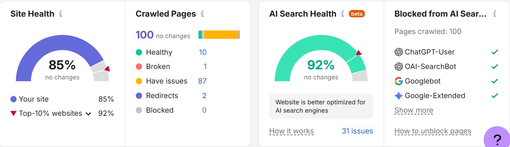
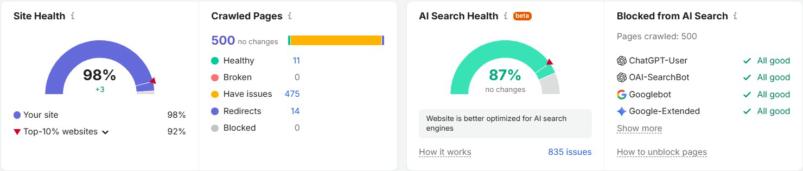

Deep technical, on-page & AI-search audit for a UAE accounting & ERP software partner, followed by a full re-audit.
Site Health 85% → 98% · broken pages 1 → 0 · now above the top-10% benchmark (92%)


| Issue | First audit | Re-audit | Change |
|---|---|---|---|
| Unminified JavaScript / CSS files | 2,690 | 7 | −99% |
| Broken images | 20 | 1 | −95% |
| 4xx client-error pages | 23 | 3 | −87% |
| Broken internal links | 59 | 11 | −81% |
| Uncached JavaScript / CSS files | 9,415 | 2,266 | −76% |
| Duplicate H1 & title tags | 8 | 5 | −38% |
Broken shortcode leaking raw code into a landing page's meta/OG description.
Wrong phone number in a paid-traffic landing page hero, so leads couldn't call.
Poor mobile Core Web Vitals: PageSpeed 47, LCP 8.6s, CLS 0.479.
Legacy duplicate pages still indexed and competing with the new site.
Lorem-ipsum FAQ page live, indexed and in the sitemap.
Keyword cannibalisation between PPC landing pages and product pages; conflicting prices across pages.
Inconsistent NAP, tag/category archive bloat, duplicate JSON-LD schema.